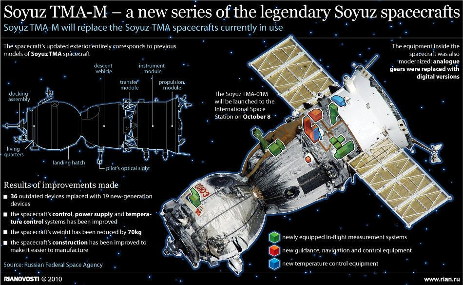

소유즈
ISS의 모듈 중 하나이다.
비상 탈출용으로 2대가 도킹되어 있었지만 하나는 ISS의 승무원들이 우주 쓰레기를 피해 탈출할 때 사용했고,
하나는 그 당시의 여파로 낙하산이 전개된 상태로 ISS에 도킹되어 있던 상황이었다.
그때 입은 피해로 인해 대기권 돌입이 불가능했기에 이걸 이용해 톈궁으로 이동하는 계획을 짠다.
이후 ISS에 번진 화재를 피해 스톤이 다급하게 기어들어간 뒤
시뮬레이션의 경험을 살려 ISS에서 분리하지만 ISS가 우주 쓰레기에 휘말릴 때 펴졌던 낙하산 줄이 엉켜 있어 움직이지 못했기 때문에
어쩔 수 없이 선외로 나가 낙하산 줄을 분리해서 ISS와 떨어진다.
이후 스톤이 매뉴얼을 보며 침착하게 3단으로 분리한 뒤 지상 착륙용 로켓 엔진을 써서 귀환 모듈만 톈궁으로 접근시킨 뒤 소화기를 들고 탈출하며 등장한다.